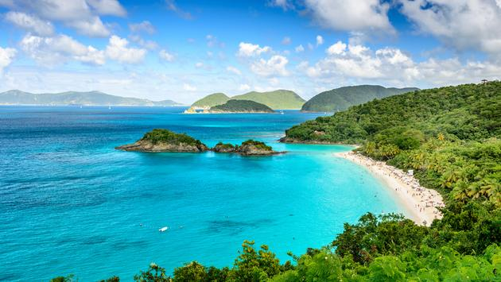
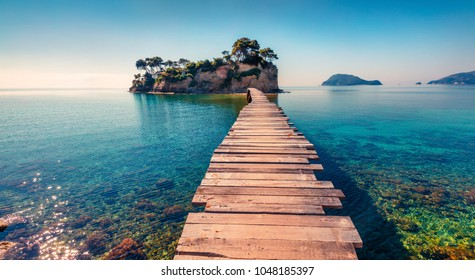
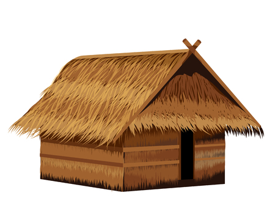

The British Islands is a term within the law of the United Kingdom which since 1949 has referred collectively to the following four polities: the United Kingdom of Great Britain and Northern Ireland; the Bailiwick of Guernsey; and the Bailiwick of Jersey; the Isle of Man.
The climate of the British Isles is mild,[60] moist and changeable with abundant rainfall and a lack of temperature extremes. It is defined as a temperate oceanic climate, or Cfb on the Köppen climate classification system, a classification it shares with most of northwest Europe.[61][62] The North Atlantic Drift ("Gulf Stream"), which flows from the Gulf of Mexico, brings with it significant moisture and raises temperatures 11 °C (20 °F) above the global average for the islands' latitudes.

The group consists of two main islands, Great Britain and Ireland, and numerous smaller islands and island groups, including the Hebrides, the Shetland Islands, the Orkney Islands, the Isles of Scilly, and the Isle of Man.
Today there are believed to be around 20,000 beach huts in the U.K. Locations where beach huts can be seen include Lowestoft, Southwold, Walton-on-the-Naze, Frinton-on-Sea, Abersoch, Langland Bay, Rotherslade, Rustington, St Helens, Isle of Wight, Tankerton Slopes and Mersea Island.
